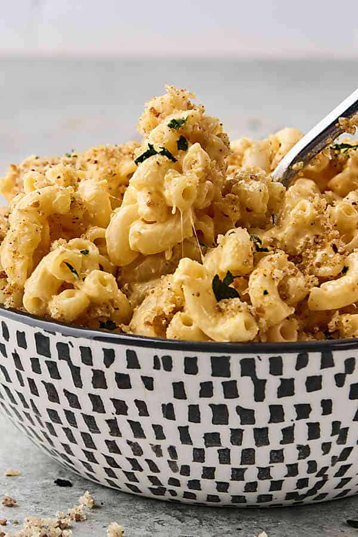
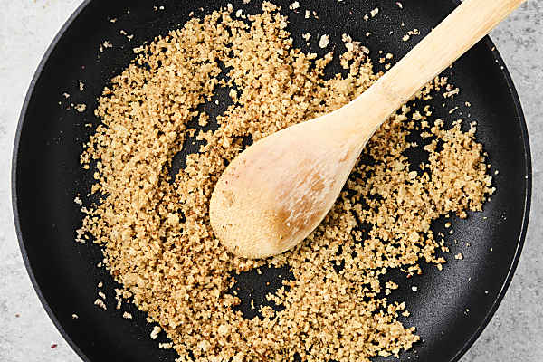
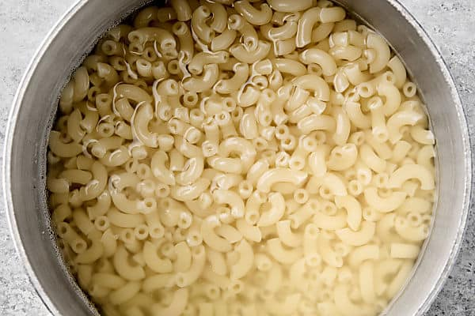
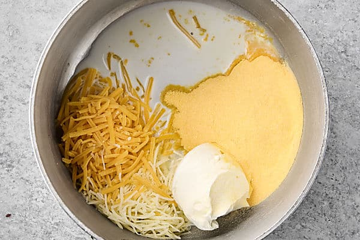
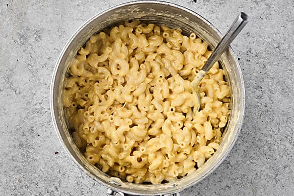

Better Kraft

How to Make Kraft Mac and Cheese Better
A few simple ways to make your boxed macaroni tastes like it’s made from scratch. Rich, creamy, and insanely easy!
Ingredients:
- Boxed Macaroni and Cheese – any kind you have on hand is fine! I used 1 (7.25 oz) box, so if your box is slightly bigger or smaller, keep that in mind when stirring in the milk and additional cheeses.
- Milk – or cream or half-and-half. Anything will work. Cream will give the richest flavor and creamiest texture, but I’ve even used almond milk with success, because that’s what I had on hand.
- Cream Cheese – replaces the butter to create a slightly tangy flavor that breaks up the richness from the other cheeses. I used plain cream cheese from a tub, but if you only have block of cream cheese, you’ll need 2 oz. If you have the time, let it soften to room temperature so it melts quicker. Boursin Garlic & Herb would be a delicious substitution.
- Cheese: Cheddar Cheese and Gruyere Cheese – normally I’m a “shred your own cheese” kinda person, but I used pre-shredded bagged cheese and it was fine! It took some extra time to melt (bagged cheese has stuff on it to keep it from clumping) and I had to thin the sauce out with a bit more milk, but it was worth it to keep this recipe extra easy!
- Butter – or oil of choice. Either is fine to toast the breadcrumbs.
- Breadcrumbs – use panko for the crunchiest texture, but regular breadcrumbs will be fine in a pinch.
- Parmesan – the finely grated parmesan in the green tub found in the pasta aisle is great! An asiago, parmesan, and romano blend would also be delicious.
- Spices: Garlic Powder, Onion Powder, Smoked Paprika, Salt, and Pepper – this simple combination of spices is such an easy way to really elevate boxed mac and cheese! These are stirred into the breadcrumb topping, but if you choose to not use the breadcrumbs for whatever reason, I’d suggest stirring these spices into the mac and cheese.
Directions:
- Make the breadcrumbs: melt butter in a non-stick pan, then stir in panko, parmesan, and spices and cook until the panko is golden brown and crispy. Set aside.

- Boil the pasta according to box directions in a medium sized saucepan, then drain noodles and set aside.

- To the saucepan, add in cream cheese, cheddar cheese, gruyere cheese, and milk and stir until a sauce has formed.

- Stir in cooked macaroni, scoop into bowls, then top with breadcrumb topping and enjoy!

Home